4.1 Front Page
Front Page displays your latest posts. This is default WordPress setting.
If you don't want to use latest posts for your home page you can navigate to the Settings > Reading and instead of the default "Front Page - Your latest posts" choose "A static page" and choose appropriate pages for the home and blog page.

This theme offer 3 front page templates:
- Front Page
- Front Page with Slider
- Front Page with Video
4.1.1 How to add content to the Front Page?
Navigate to the Pages and create a new page named "Front Page" or whatever you want to call it. Front page uses "Front Page" template from the "Page Attributes".
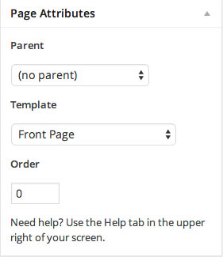
4.1.1.1 Top Content Block
To add image as a background just upload the featured image. Size of the image we used in the live demo is 2600 x 955px.
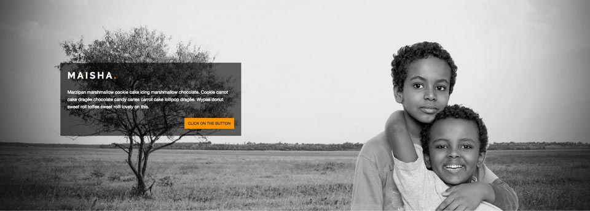
Next step is to add the content inside the editor.
Content we added in the editor is:
If you want to have clickable button to open the right panel as in the demo, use the class="cd-btn button" for your a tag:
Or if you want to have just a normal button that opens other page you can use class="button"
You are free to add any other content instead of the one we used in the demo. Feel free to create anything you need!
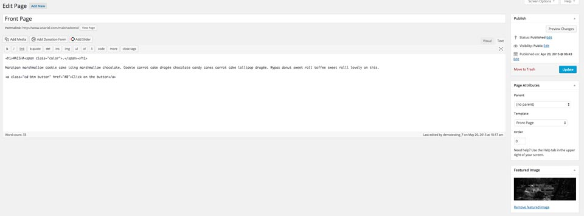
4.1.1.2 Opening Panel Block
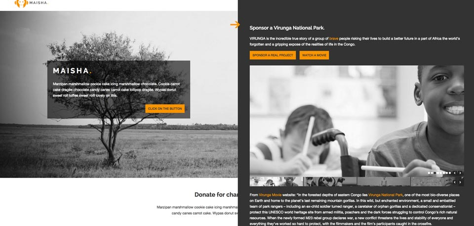
If you want to have opening panel block like in the demo please navigate to the Pages and open a new page, we named it "Slide in Panel". This panel block is in relation with the clickable button we mentioned before. If you want to have opening panel block you need to use clickable button:
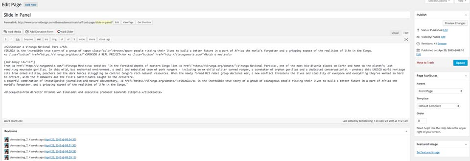
Inside the Page Attributes choose "Parent: Front Page" to show this content inside the opening panel on the front page.
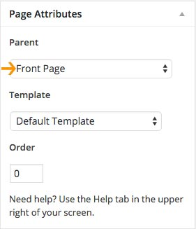
4.1.1.3 First Content Block
This block consists of 2 separate sections. Main section "Donate for charity & stop war !" that is a parent page and optional block that includes 3 child pages (First Cause, Second Cause, Third Cause).
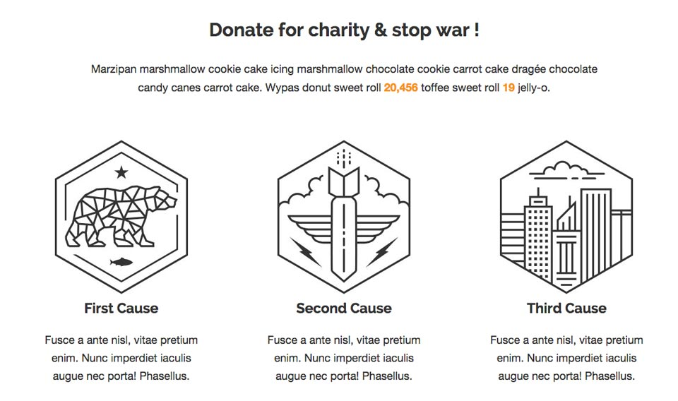
a) Main Part
Navigate to the Pages and open a new page, we named it "Donate for charity & stop war !". Inside the editor add the content you want to show in the main area. See below:
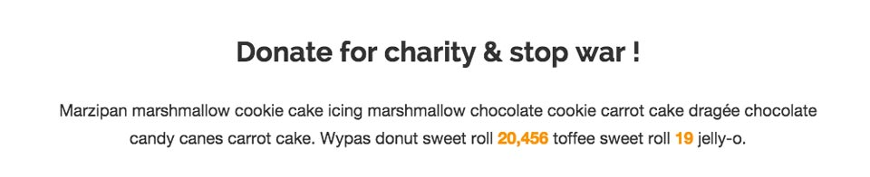
Inside the editor you can put text, images, slider etc.
Content we added into the editor is:
Once you are done with editing, open "Customizer" and inside the "Front Page > First Content Block" choose the page you created and it will show up on the front page.
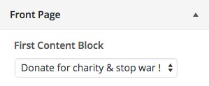
* You can use span with the class="color" whenever you want to have part of the text in orange color:
b) Three Column Block
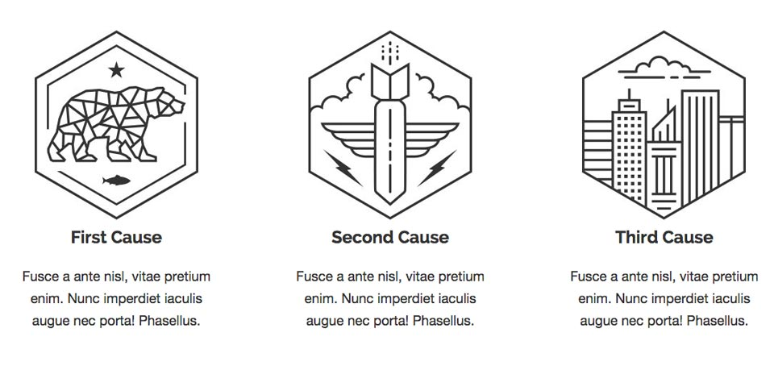
If you want to show three column block under the main content you'll need to open three different child pages (First Cause, Second Cause, Third Cause).
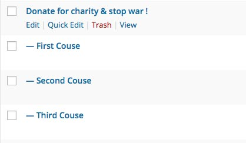
Inside the editor add the content you want to show and upload featured image (optional).
Inside the Page Attributes choose "Parent: Donate for charity & stop war !" or the name of the page you created above.
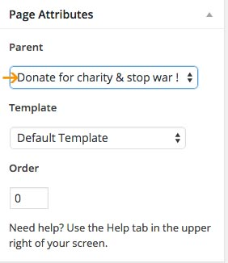
4.1.1.4 Second Content Block
Navigate to the Pages and open a new page, we named it "About Maisha". Inside the editor add the content you want to show in the main area. See below:
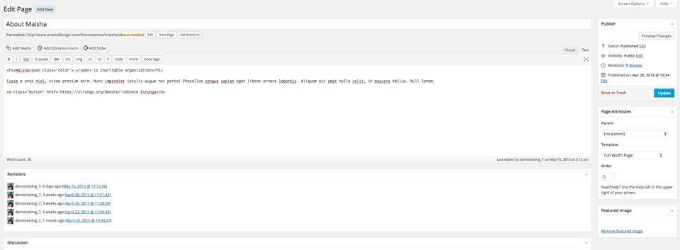
Inside the editor you can put text, images, slider etc.
Content we added into the editor is:
Once you are done with editing open "Customizer" and inside the "Front Page > Second Content Block" choose the page you created and it will show up on the front page.
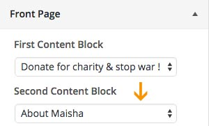
4.1.1.5 Third Content Block
This block consists of 2 separate parts - left and right content part. Main part "Our Programs" that is a parent page and optional block that includes child pages (Program One, Program Two, Program Three, Program Four).
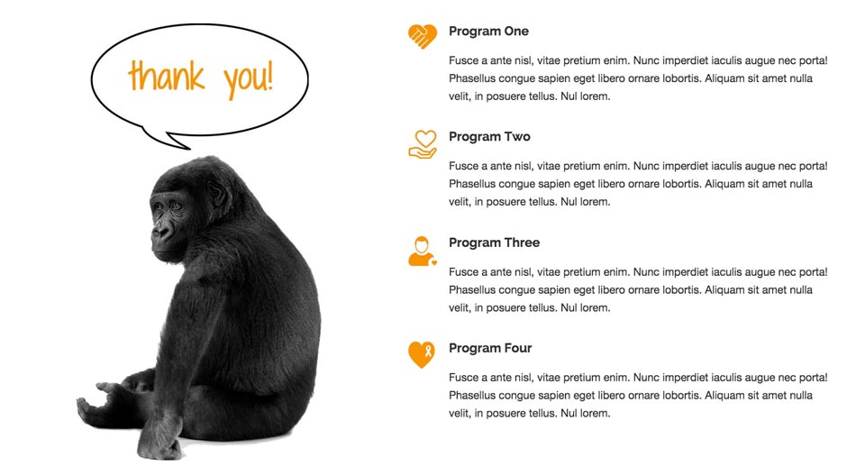
a) Main Part - Left Content Part
Navigate to the Pages and open a new page, we named it "Our Programs". Inside the editor add the content you want to show in the main area. See below:
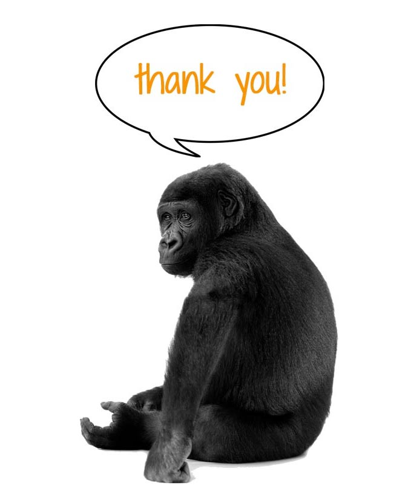
Inside the editor you can put text, images, slider etc.
We decided to upload just the featured image to show it on the left side.
b) Right Content Block
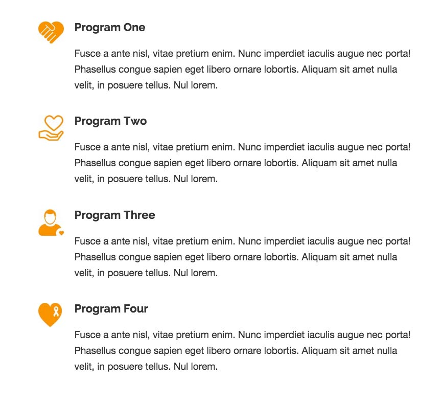
If you want to show list of the child pages on the right you'll need to open different child pages (Program One, Program Two, Program Three, Program Four).
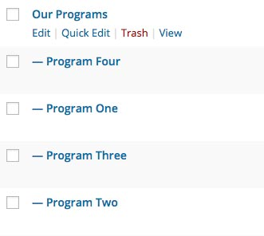
Inside the editor add the content you want to show and upload the featured image (optional).
Inside the Page Attributes choose "Parent: Our Programs" or the name of the page you created above.
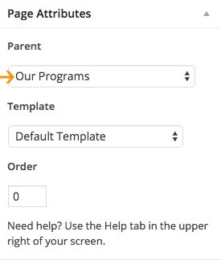
Once you are done with editing open "Customizer" and inside the "Front Page > Third Content Block" choose the page you created and it will show up on the front page.
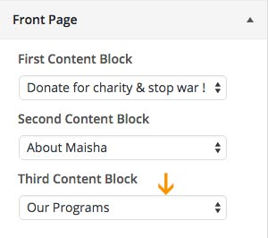
4.1.1.6 Widgetized Latest Post Block
This block consists of widgetized sidebar where you can show your latest posts using custom Maisha Recent Post widgets.
Navigate to the Appearance > Widgets and inside the "Front Page Recent Posts Block" drag and drop "Maisha Front Page - 4 Column Recent Posts" widget.
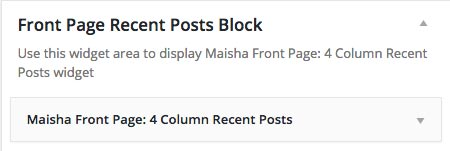
You can show your recent posts in 3 column using "Maisha Front Page - 3 Column Recent Posts" widget, in 4 column using "Maisha Front Page - 4 Column Recent Posts" widget, in 5 column using "Maisha Front Page - 5 Column Recent Posts" widget or 6 column using "Maisha Front Page - 4 Column Recent Posts" widget
4.2 Front Page with Slider
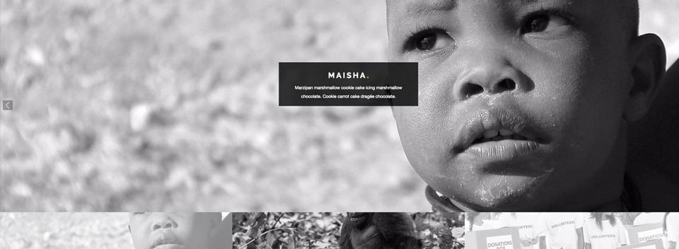
Navigate to the Pages and open a new page, we named it "Front Page with Slider". Front page with Slider uses "Front Page with Slider" template from the "Page Attributes". Inside the editor add a Soliloquy slider shortcode. See below:
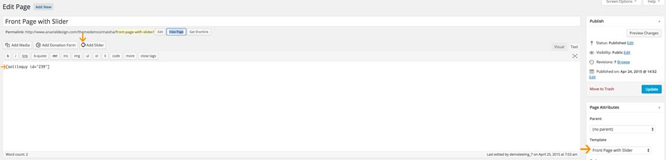
The rest of the content is the same as we explained above for the Front Page template.
4.3 Front Page with Video
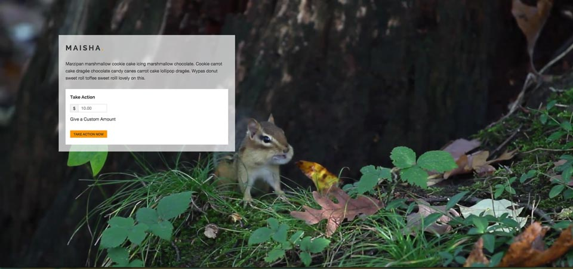
Navigate to Pages and open a new page, we named it "Front Page with Video". Front page with Video uses "Front Page with Video" template from the "Page Attributes". See below:
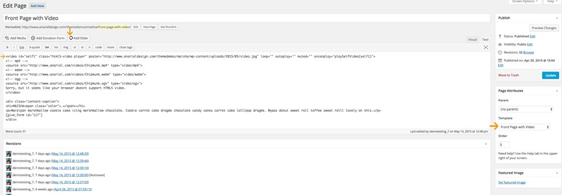
Content we added into the editor is:
If you want to have a video as a background you'll need to have a mp4, webm and ogv format of the video and to upload it on your server or a cloud and than replace our "src" info with yours.
For the donation form we used "Give" plugins: https://wordpress.org/plugins/give/ - empower your cause: start accepting donations on WordPress with Give.
The rest of the content is the same as we explained above for the Front Page template.
Using the front page templates and options inside the Customizer you can create totally different front page as it is in the demo. We showed you inside the demo few expamles what you can do with it but you are free to add your own content and play with it. Options are endless!